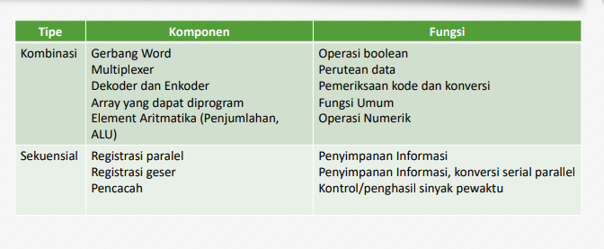

Level Register
Register adalah komponen yang lebih kompak dibandingkan dengan sebuah gerbang logik dan flip-flop. Definisi register sendiri yaitu komponen komponen dalam komputer yang dibangun dari flip flop dan gerbang.
Pembagian register berdasarkan data yang dikelompokkan :
• Register Data : Untuk menyimpan bilangan integer
• Register Alamat : Untuk menyimpan alamat yang digunakan untuk mengakses memori
• Register Tujuan Umum : Untuk menyimpan data juga alamat
• Register Floating Point : Menyimpan bilangan floating point
• Register Konstanta : Menyimpan nilai yang hanya dapat dibaca
• Register Vektor : Menyimoan data untuk melakukan proses vector
• Register Tujuan Khusus : Untuk menyimpan kondisi program termasuk di dalamnya terdapat pencacah program stack point dan register status
Rangkaian Komponen Register :
1. Rangkaian Kombinasional
Rangkaian dimana setiap outputnya merupakan fungsi input pada saat tertentu saja. Komponennya sendiri terdiri dari Multiplexer, Demultiplexer, Decoder, Encoder, Aritmethic Elements.
2. Rangkaian Sequential
Rangkaian yang outputnya tidak hanya bergantung pada input waktu itu saja, tetapi juga bergantung pada keadaan input sebelumnya. Komponennya sendiri terdiri dari Paralel Register, Shift Register dan Counter.

Multiplexer atau MUX adalah rangkaian yang memilih satu daru beberapa jalur input menjadi satu jalur output. Jalur sumber yang diteruskan ke jalur output dikendalikan oleh “Select”.
Contoh Rangkaian Multiplexer
Demultiplexer berperan sebagai distributor data. Demultiplexer ini merupakan kebalikan dari MUX dimana ia akan mengambil satu input dan kemudian disebarkan pada beberapa jalur output.
Contoh Rangkaian Demultiplexer
Decoder adalah sebuah rangkaian dimana rangkaian tersebut menerima input kemudian akan memilih salah satu jalur output.
Simbol decoder 1/n
Rangkaian Decoder
Encoder merupakan rangkaian yang digunakan untuk membuat alamat atau nama dari input line yang aktif. Encoder ini merupakan kebalikan dari decoder. Encoder biasanya mempunyai 2x input line dan x output jalur alamat.
Simbol Encoder n bit 
Register Data yakni kumpulan elemen memori yang bekerja Bersama sebagai satu unit dan berfungsi sebagai penyimpan data.
Rangkaian Register Data
Simbol Register Data n bit
Register Geser yaitu register yang dapat melakukan penggeseran ke kiri atau ke kanan. Untuk melakukan pergeseran harus mempunyai x buah flip-flop master-slave yang masing – masingnya dihubungkan dengan kiri – kanannya.
Rangkaian Register Geser
Simbol Register Geser n bit
Fungsi Register Geser :
1. Menyimpan data serial
2. Konversi data serial ke paralel atau paralel ke serial
3. Melakukan operasi aritmetik
Register Geser Universal (Kanan - Kiri) 
Pencacah atau Counter adalah sebuah mesin sekuensial yang digunakan untuk mencacah. Pencacah sederhana diperoleh dari modifikasi register geser.
Simbol Pencacah atau Counter 
Muhammad Raihan Firdaus
16 November 2022